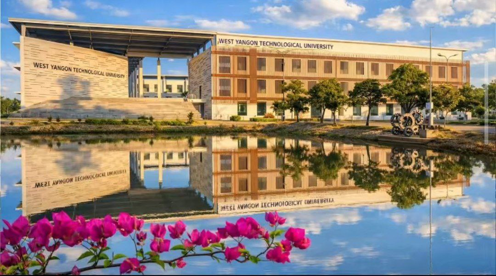

About the University
West Yangon Technological University (WYTU) is a public engineering university located in the heart of Hlaing Thar Yar Township, Yangon — strategically positioned adjacent to one of Myanmar's most active industrial zones. Originally established in 1996 as a second campus of the prestigious Yangon Technological University (YTU), WYTU became an official subsidiary institution in December 1999 before being formally recognized as a fully independent standalone university on December 15, 2005.
Ranked as Myanmar's #3 Engineering University, WYTU serves approximately 4,000 students across 11 undergraduate engineering programs. Its unique advantage lies in its proximity to industrial facilities, giving students unrivaled access to practical training environments that most engineering universities can only dream of.
Since 2021, WYTU has operated under the Ministry of Education, reflecting its growing role as a national educational institution. The university holds ISO 9001:2015 certification and has 6 of its programs provisionally accredited by the EEAC/FEIAP, marking significant strides in international quality recognition.
History Timeline
YTU Second Campus Established
West Yangon campus opened as the second campus of Yangon Technological University to accommodate growing demand for engineering education in the western Yangon region.
Official YTU Subsidiary
Formally established as a subsidiary institution under Yangon Technological University, gaining its own administrative identity while remaining linked to the parent institution.
Standalone University — WYTU Born
Officially inaugurated as West Yangon Technological University — a fully independent public engineering university serving Hlaing Thar Yar and the greater Yangon region.
Transferred to Ministry of Education
Previously under the Ministry of Science and Technology, WYTU was shifted to the Ministry of Education — broadening its academic mandate and national alignment.
Why Choose WYTU?
Industrial Zone Proximity
Located directly beside Hlaing Thar Yar's industrial zone, WYTU students gain real-world exposure to factories, workshops, and engineering operations that most students only read about.
Myanmar's #3 Engineering University
Nationally ranked third among engineering universities, WYTU graduates are recognized and respected across Myanmar's engineering and industrial sectors.
ISO 9001:2015 Quality Certified
WYTU's academic and administrative operations are certified under the internationally recognized ISO 9001:2015 quality management standard.
International Accreditation Progress
Six programs are provisionally accredited by EEAC/FEIAP, placing WYTU on a clear trajectory toward full international engineering accreditation.
220+ Acre Campus
One of the largest engineering university campuses in Myanmar, offering spacious grounds, modern academic blocks, and dedicated student facilities.
YTU-Level Academic Standards
WYTU was built on YTU's academic foundation — its curriculum, faculty training, and engineering standards all trace directly to Myanmar's premier engineering institution.
Campus Gallery


Academic Programs
11 engineering disciplines across Bachelor's and Master's levels
Civil Engineering
B.E. CivilDesign and construct infrastructure — bridges, buildings, roads, drainage, and urban water systems. Civil engineers are central to Myanmar's rapid infrastructure development.
Mechanical Engineering
B.E. MechanicalDesign, analyze, and manufacture mechanical systems — engines, turbines, machines, and thermal systems. Particularly relevant given WYTU's proximity to industrial manufacturing zones.
Electrical Power Engineering
B.E. Electrical PowerGenerate, transmit, and distribute electrical power. Electrical Power engineers design the energy infrastructure that keeps Myanmar's cities and industries running.
Electronic Engineering
B.E. ElectronicDesign electronic circuits, communication systems, and signal processing devices. From microchips to telecommunications — the field driving Myanmar's digital economy.
Mechatronics Engineering
B.E. MechatronicsA cutting-edge fusion of mechanical, electrical, and computer engineering — design intelligent machines, automated systems, and industrial robots for modern manufacturing.
Information Technology Engineering
B.E. ITBuild software systems, manage networks, and develop IT infrastructure. One of the fastest-growing engineering fields with enormous demand in Myanmar's digital transformation era.
Chemical Engineering
B.E. ChemicalDesign industrial chemical processes — refining, food processing, pharmaceuticals, and materials manufacturing. Critical for Myanmar's growing manufacturing and resource sectors.
Mining Engineering
B.E. MiningExtract mineral resources safely and efficiently. Myanmar is resource-rich — mining engineers are vital to the sustainable extraction of jade, gemstones, copper, coal, and more.
Metallurgy & Materials Science
B.E. MetallurgyStudy the properties, behavior, and processing of metals and advanced materials. From steel structures to aerospace alloys — materials scientists underpin all of modern engineering.
Agricultural Engineering
B.E. AgriculturalApply engineering principles to agriculture — irrigation, farm machinery, food processing, and rural infrastructure. Essential for modernizing Myanmar's largest economic sector.
Architecture
B.ArchDesign functional, aesthetic, and sustainable built environments. Myanmar's rapid urbanization demands skilled architects who understand both tradition and modern urban planning.
Master of Engineering (M.E.)
PostgraduateAdvanced postgraduate engineering degrees available across multiple disciplines. Research-focused programs for graduates seeking specialization and academic or industry leadership.
Master of Architecture (M.Arch)
PostgraduateAdvanced postgraduate architecture program for B.Arch graduates seeking higher-level design research, urban planning, and professional architectural practice.
Academic Departments
13 departments covering all engineering and architectural disciplines
Civil Engineering
Structural, geotechnical, hydraulic, transportation, and environmental engineering.
Mechanical Engineering
Machinery design, thermodynamics, manufacturing technology, and industrial systems.
Electrical Power Engineering
Power generation, transmission, distribution, and electrical machine design.
Electronic Engineering
Circuit design, communication systems, digital electronics, and embedded systems.
Mechatronics Engineering
Robotics, automation, intelligent systems, and industrial control.
Information Technology Engineering
Software development, networking, database management, and cybersecurity.
Chemical Engineering
Process engineering, chemical reaction design, and industrial plant operations.
Mining Engineering
Mineral extraction, mine planning, rock mechanics, and resource management.
Metallurgy & Materials Science
Metal properties, alloy design, corrosion science, and materials processing.
Agricultural Engineering
Irrigation systems, farm machinery, rural engineering, and agro-processing.
Architecture
Architectural design, urban planning, environmental design, and building technology.
Engineering Mathematics & Physics
Supporting department providing the mathematical and scientific foundations for all engineering programs.
Myanmar & English Languages
Communication and language skills essential for professional engineering practice in Myanmar and abroad.
Campus Life at WYTU
Life at WYTU is shaped by the university's unique setting — a sprawling 220-acre campus on the edge of Hlaing Thar Yar's industrial corridor, combining academic rigour with real-world engineering exposure unlike any other university in Myanmar.
Industrial Exposure
Direct access to Hlaing Thar Yar's manufacturing zone allows WYTU students to conduct factory visits, internships, and site studies as part of their regular coursework — a distinct competitive advantage.
On-Campus Hostels
Student dormitories accommodate students from across Myanmar, fostering a diverse engineering community and enabling focus on academics away from home.
Engineering Laboratories
Dedicated labs for each engineering department equipped with industry-standard tools, software, and experimental equipment for hands-on learning.
University Library
A well-stocked engineering library with technical references, academic journals, research publications, and digital learning resources.
Sports & Recreation
Sports grounds and recreational facilities for football, badminton, basketball, and other activities to help students maintain physical wellness during demanding engineering study.
Student Unions & Clubs
Active student organizations spanning engineering society chapters, cultural groups, and academic clubs connecting students across departments and year groups.
Alumni & Community
Though younger than its parent institution YTU, WYTU has cultivated a growing and proud alumni network across Myanmar's engineering and industrial sectors. Graduates of WYTU are particularly prominent in manufacturing, construction, electrical utilities, and IT sectors in Yangon and beyond.
Industrial Sector Leaders
WYTU graduates are highly valued by manufacturers, construction firms, and utility companies operating in Hlaing Thar Yar's industrial zone and across Myanmar — reflecting the university's practical, industry-aligned training.
International Opportunities
Several WYTU graduates have pursued advanced engineering degrees and careers in Japan, South Korea, Singapore, and other ASEAN nations, demonstrating the international competitiveness of WYTU's engineering education.
WYTU Alumni Association
An active alumni association supports current students through networking, mentoring, and career guidance — building a strong bridge between graduating students and the professional world.
Career Paths for WYTU Graduates
Engineering careers across Myanmar's industrial, infrastructure, and technology sectors
Civil & Structural Engineer
Design buildings, bridges, roads, and infrastructure projects across Myanmar's booming construction sector.
Industrial / Mechanical Engineer
Operate and optimize factory machinery, production lines, and industrial systems in Yangon's manufacturing hubs.
Electrical Power Engineer
Design and manage electrical grids, power stations, and distribution systems for Myanmar's growing energy sector.
IT Engineer / Software Developer
Build digital infrastructure and software solutions driving Myanmar's rapid technology-sector growth.
Automation / Mechatronics Engineer
Design and implement automated systems and robotics for Myanmar's modernizing manufacturing industry.
Mining Engineer
Work in Myanmar's resource-rich mining sector — jade, copper, gold — ensuring safe and efficient mineral extraction.
Agricultural Engineer
Modernize Myanmar's agricultural sector through irrigation design, farm mechanization, and rural infrastructure.
Architect
Design functional and aesthetic buildings, lead urban planning projects, and shape Myanmar's built environment.